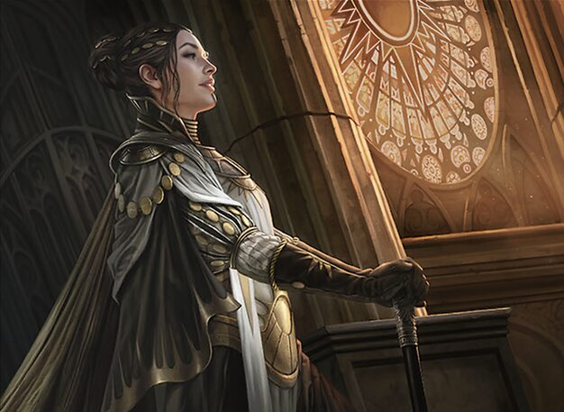

Meren of Clan Nel Toth
Solides Mittelfeld
Das Deck gewinnt 24 % seiner Partien – der Schnitt am Vierertisch liegt bei 25 %.
- Stufe · Elo
- B 1523 Platz 28 von 64 in der Rangliste bis 500 €
- Siegquote
- 24 % 87,2 Siege in 369 Partien, mit 90 % Sicherheit zwischen 20 und 27 %
- Platzierungen
- 128 %11×
- 218 %7×
- 328 %11×
- 426 %10×
Dort ein neues Deck anlegen und die Liste beim Import einfügen.
- Preis
- 487,75 €von 500,00 €
- Partien
- 410in 41 Turnieren, 41 am Zeitlimit nicht gewertet
- Karten
- 10034 Länder, davon 17 Standard
- Game Changer
- 0höchstens 3 erlaubt
- Kombos
- 8komplett im Deck
- Regelcheck
- Bestanden100 Karten, Farben, Bannliste
KI-Hinweis: 6 Karten dieses Decks kann die Forge-KI nicht spielen (in den Forge-Partien durch ähnliche ersetzt), 5 weitere spielt sie nur eingeschränkt. Das Ergebnis ist darum etwas weniger aussagekräftig. Betroffene Karten
Höchstens 500 € inklusive Commander. Steigen die Preise darüber, wird die Kaufliste automatisch neu gebaut.
Stärken und Schwächen
Aus 339 ausgewerteten Partien in 38 Turnieren (mit den Listen, die im Turnier gespielt wurden). Partien am Zeitlimit zählen wie in der Rangliste nicht. Werte in Klammern: Schnitt aller Decks derselben Preisklasse. Die genauen Zahlen siehst du, wenn du mit der Maus auf einen Punkt zeigst oder ihn antippst.
Spielweise: gemischt – 70 % Kampfschaden, der Rest direkter Schaden · So gewinnt es: 43 % der Siege durch Überleben – die Gegner schalteten sich gegenseitig aus (Schnitt aller Decks: 32 %)
Stärken
- Kommt nach Board Wipes zurück Hinweis26 % Siege wenn die Gegner einen Board Wipe wirkten, 13 % ohne Board Wipe (Schnitt aller Decks: 23 % zu 29 %) · 239 / 100 Partien
- Nutzt sein Mana gut sicherNur 21 % der Länder blieben in einem Zug ungenutzt (Schnitt aller Decks: 26 %) – das Deck hat fast immer etwas zu spielen · gemessen in den eigenen Zügen 3–8, 120 Partien
Schwächen
- Braucht lange zum Sieg sicherSiege im Schnitt erst im 13. eigenen Zug (Schnitt aller Decks: 12.) · 75 Siege
- Wenig Druck sichernur Ø 22 Schaden an Gegnern je Partie (Schnitt aller Decks: 29) · 339 Partien
- Wird oft als Erstes ausgeschaltet sicherin 33 % der Partien (Schnitt aller Decks: 25 %) · 112 von 338 Partien
- Abhängig vom Commander Hinweisohne ihn nur 6 % Siege, mit ihm 23 % · 18 Partien ohne, 321 mit Commander
Gegen wen es gewinnt
Siegquote an Tischen, an denen dieser Commander mitspielte – nur Gegner aus der aktuellen Rangliste mit mindestens 20 gemeinsamen Partien. Am Vierertisch liegt der Schnitt bei 25 %.
Gewinnt oft gegen
 42 %von 24
42 %von 24
32 %von 25 32 %von 22
32 %von 22
Tut sich schwer gegen
 15 %von 20
15 %von 20 17 %von 24
17 %von 24 18 %von 22
18 %von 22
Mit einem anderen Commander vergleichen
Commander (1)
- Meren of Clan Nel Toth1,96 €
Kreaturen (41)
- Sephiroth, Fabled SOLDIER // Sephiroth, One-Winged Angel KartenziehenKombo30,10 €
- Yawgmoth, Thran Physician KartenziehenKombo28,53 €
- Mikaeus, the UnhallowedKombo19,34 €
- Warren Soultrader RampKombo15,44 €
- Deathrite Shaman Removal6,51 €
- Braids, Arisen Nightmare Kartenziehen3,84 €
- Protean Hulk3,68 €
- Pitiless Plunderer RampKombo3,48 €
- Elves of Deep Shadow Ramp3,02 €
- Birds of Paradise Ramp3,00 €
- Massacre Wurm Board Wipe2,96 €
- Carrion FeederKombo2,62 €
- Simulacrum Shaper Ramp2,17 €
- Blood ArtistKombo2,14 €
- Grim Haruspex Kartenziehen1,97 €
- Forsaken MinerKombo1,56 €
- Zulaport CutthroatKombo1,29 €
- GravecrawlerKombo1,08 €
- Gray Merchant of AsphodelKombo0,93 €
- Haywire Mite Removal0,90 €
- Wight of the Reliquary Ramp0,89 €
- Eternal WitnessKombo0,85 €
- Elvish Mystic Ramp0,65 €
- Syr Konrad, the Grim0,57 €
- Viscera SeerKomboKI kann nicht0,54 €
- Umbral Collar ZealotKombo0,42 €
- Plaguecrafter Removal0,35 €
- Butcher of Malakir Removal0,32 €
- Ravenous Chupacabra Removal0,32 €
- Sakura-Tribe Elder Ramp0,32 €
- Spore Frog0,27 €
- Cankerbloom RemovalKI schwach0,24 €
- Midnight Reaper Kartenziehen0,21 €
- Morbid Opportunist Kartenziehen0,21 €
- Llanowar Elves Ramp0,17 €
- Solemn Simulacrum Ramp0,16 €
- Reclamation Sage Removal0,15 €
- Fleshbag Marauder Removal0,12 €
- Accursed Marauder Removal0,11 €
- Reassembling SkeletonKombo0,10 €
- Wood Elves Ramp0,08 €
Spontanzauber (5)
- Entomb14,30 €
- Heroic Intervention Schutz8,49 €
- Abrupt Decay Removal1,55 €
- Assassin's Trophy Removal1,20 €
- Village Rites Kartenziehen0,21 €
Hexereien (8)
- Diabolic IntentKI kann nicht12,16 €
- Reanimate8,43 €
- Living Death Board WipeKomboKI schwach4,19 €
- Toxic Deluge Board WipeKI kann nicht3,43 €
- Buried AliveKI schwach1,31 €
- Culling Ritual Board Wipe0,75 €
- Victimize0,54 €
- Rise of the Witch-king Removal0,37 €
Artefakte (7)
- Phyrexian AltarKomboKI schwach38,00 €
- Altar of DementiaKomboKI kann nicht13,06 €
- Ashnod's AltarKombo9,85 €
- Skullclamp Kartenziehen4,21 €
- Lightning Greaves Schutz3,23 €
- Sol Ring Ramp0,74 €
- Arcane Signet Ramp0,36 €
Verzauberungen (4)
- Sylvan Library KartenziehenKI kann nicht23,57 €
- Animate Dead5,73 €
- Open the GravesKombo0,32 €
- Moldervine Reclamation KartenziehenKombo0,29 €
Länder (34)
- Boseiju, Who Endures44,37 €
- Urborg, Tomb of YawgmothKI schwach32,87 €
- Verdant Catacombs24,98 €
- Phyrexian TowerKI kann nicht20,92 €
- Wooded Foothills16,67 €
- Underground Mortuary16,13 €
- Windswept Heath10,60 €
- Overgrown Tomb6,86 €
- Nurturing Peatland5,46 €
- Undergrowth Stadium4,96 €
- Llanowar Wastes1,04 €
- Woodland Cemetery0,99 €
- High Market0,77 €
- Twilight Mire0,71 €
- Tainted Wood0,35 €
- Command Tower0,18 €
- Evolving Wilds0,03 €
- 12× Swamp
- 5× Forest
Welche Karten Siege bringen
Aus 339 Partien dieses Decks: Wie oft es gewonnen hat, wenn die Karte in der Partie gespielt wurde – verglichen mit seinem Schnitt von 22 %. Nur Karten, die mindestens 20-mal gespielt wurden. Teure Karten, die spät kommen, sehen oft etwas besser aus, weil man dafür lange genug überleben muss.
| Karte | Partien | Siege, wenn gespielt | gegenüber Schnitt |
|---|---|---|---|
| Victimize | 39 | 59 % | +37 |
| Massacre Wurm | 25 | 52 % | +30 |
| Protean Hulk | 45 | 47 % | +25 |
| Buried Alive | 52 | 42 % | +20 |
| Butcher of Malakir | 56 | 41 % | +19 |
| Culling Ritual | 55 | 40 % | +18 |
| Blood Artist | 50 | 40 % | +18 |
| Living Death | 44 | 39 % | +17 |
| Zulaport Cutthroat | 56 | 38 % | +15 |
| Mikaeus, the Unhallowed | 62 | 35 % | +13 |
Alle 55 Karten zeigen
Upgrade auf bis 1.000 €
Du hast dieses Deck bis 500 €? Das getestete Deck bis 1.000 € spielt diese Karten anders – oben die, mit denen es am häufigsten gewinnt.
6 Karten anders · +459,93 € · Platz 28 → Platz 24
- Bayou306,43 €
- The One Ring105,20 €
- Demonic Tutor42,56 €
- Bloodstained Mire16,99 €
- Birthing Pod11,36 €
- Dauthi Voidwalker5,28 €
Dafür raus (6)
Evolving Wilds, Heroic Intervention, Morbid Opportunist, Open the Graves, Simulacrum Shaper, Wooded Foothills
Starthand ziehen
Sieben zufällige Karten aus diesem Deck – so siehst du, wie sich der Start anfühlt. Der Commander liegt wie im Spiel nicht im Stapel.
Kombos im Deck (8)
Laut Commander Spellbook mit dieser Kartenliste möglich. Was eine Kombo genau braucht, steht dort. Ob eine Kombo in Partien wirklich zusammenkam, steht im Reiter „Partien“.
- Warren Soultrader + … → ∞ ETB-Auslöser von Kreaturen, ∞ LTB-Auslöser von Kreaturen, ∞ Opfer-Auslöser von Kreaturen
10 Fassungen, dazu passt jeweils eine von: Gravecrawler · Blood Artist · Forsaken Miner · Sephiroth, Fabled SOLDIER // Sephiroth, One-Winged Angel · Phyrexian Altar · Mikaeus, the Unhallowed und 2 weitere - Pitiless Plunderer + Gravecrawler + … → ∞ ETB-Auslöser von Kreaturen, ∞ Sterbe-Auslöser, ∞ LTB-Auslöser von Kreaturen
8 Fassungen, dazu passt jeweils eine von: Ashnod's Altar · Reassembling Skeleton · Altar of Dementia · Phyrexian Altar · Viscera Seer · Carrion Feeder und 2 weitere - Mikaeus, the Unhallowed + … → ∞ ETB-Auslöser von Kreaturen, ∞ LTB-Auslöser von Kreaturen, ∞ Opfer-Auslöser von Kreaturen
7 Fassungen, dazu passt jeweils eine von: Phyrexian Altar · Gravecrawler · Ashnod's Altar · Carrion Feeder · Viscera Seer · Altar of Dementia und 1 weitere - Warren Soultrader + Pitiless Plunderer + Reassembling Skeleton + … → ∞ ETB-Auslöser von Artefakten, ∞ LTB-Auslöser von Artefakten, ∞ Opfer-Auslöser von Artefakten
4 Fassungen, dazu passt jeweils eine von: Blood Artist · Zulaport Cutthroat · Sephiroth, Fabled SOLDIER // Sephiroth, One-Winged Angel · Moldervine Reclamation - Reassembling Skeleton + Pitiless Plunderer + Open the Graves + … → ∞ ETB-Auslöser von Kreaturen, ∞ LTB-Auslöser von Kreaturen, ∞ Sterbe-Auslöser
4 Fassungen, dazu passt jeweils eine von: Viscera Seer · Carrion Feeder · Umbral Collar Zealot · Altar of Dementia - Yawgmoth, Thran Physician + Open the Graves + … → ∞ Kartenziehen, ∞ Zieh-Auslöser, Fast ∞ ETB-Auslöser von Kreaturen
4 Fassungen, dazu passt jeweils eine von: Blood Artist · Zulaport Cutthroat · Sephiroth, Fabled SOLDIER // Sephiroth, One-Winged Angel · Moldervine Reclamation - Mikaeus, the Unhallowed + Yawgmoth, Thran Physician + Gray Merchant of Asphodel → ∞ Kartenziehen, ∞ Zieh-Auslöser, Fast ∞ Sterbe-Auslöser
- Living Death + Eternal Witness + Phyrexian Altar → ∞ Blinken, ∞ farbiges Mana, ∞ Sterbe-Auslöser
Commander Spellbook führt 39 Einträge, weil jede Fassung einzeln zählt (zum Beispiel mit einem anderen Opfer-Ziel). Hier zählt jede Kombo einmal.
Alle 39 Einträge anzeigen
- Gravecrawler + Phyrexian Altar → ∞ Sterbe-Auslöser, ∞ ETB-Auslöser von Kreaturen, ∞ LTB-Auslöser von Kreaturen
- Pitiless Plunderer + Ashnod's Altar + Reassembling Skeleton → ∞ farbloses Mana, ∞ Sterbe-Auslöser, ∞ ETB-Auslöser von Kreaturen
- Warren Soultrader + Gravecrawler + Blood Artist → ∞ Sterbe-Auslöser, ∞ ETB-Auslöser von Kreaturen, ∞ Lebensgewinn-Auslöser
- Warren Soultrader + Gravecrawler + Zulaport Cutthroat → ∞ ETB-Auslöser von Kreaturen, ∞ LTB-Auslöser von Kreaturen, ∞ Opfer-Auslöser von Kreaturen
- Pitiless Plunderer + Reassembling Skeleton + Phyrexian Altar → ∞ Sterbe-Auslöser, ∞ ETB-Auslöser von Kreaturen, ∞ LTB-Auslöser von Kreaturen
- Gravecrawler + Pitiless Plunderer + Ashnod's Altar → ∞ farbloses Mana, ∞ Sterbe-Auslöser, ∞ ETB-Auslöser von Kreaturen
- Warren Soultrader + Pitiless Plunderer + Reassembling Skeleton + Blood Artist → ∞ ETB-Auslöser von Artefakten, ∞ LTB-Auslöser von Artefakten, ∞ Opfer-Auslöser von Artefakten
- Gravecrawler + Pitiless Plunderer + Viscera Seer → ∞ LTB-Auslöser von Kreaturen, ∞ ETB-Auslöser von Kreaturen, ∞ Opfer-Auslöser von Kreaturen
- Warren Soultrader + Pitiless Plunderer + Zulaport Cutthroat + Reassembling Skeleton → ∞ ETB-Auslöser von Artefakten, ∞ LTB-Auslöser von Artefakten, ∞ Opfer-Auslöser von Artefakten
- Gravecrawler + Pitiless Plunderer + Carrion Feeder → ∞ +1/+1-Marken auf einer Kreatur, ∞ Sterbe-Auslöser, ∞ ETB-Auslöser von Kreaturen
- Warren Soultrader + Forsaken Miner + Blood Artist → ∞ Sterbe-Auslöser, ∞ ETB-Auslöser von Kreaturen, ∞ LTB-Auslöser von Kreaturen
- Warren Soultrader + Gravecrawler + Sephiroth, Fabled SOLDIER // Sephiroth, One-Winged Angel → ∞ LTB-Auslöser von Kreaturen, ∞ ETB-Auslöser von Kreaturen, ∞ Opfer-Auslöser von Kreaturen
- Warren Soultrader + Forsaken Miner + Sephiroth, Fabled SOLDIER // Sephiroth, One-Winged Angel → ∞ LTB-Auslöser von Kreaturen, ∞ ETB-Auslöser von Kreaturen, ∞ Opfer-Auslöser von Kreaturen
- Forsaken Miner + Phyrexian Altar + Blood Artist → ∞ Sterbe-Auslöser, ∞ ETB-Auslöser von Kreaturen, ∞ Lebensgewinn
- Warren Soultrader + Pitiless Plunderer + Reassembling Skeleton + Sephiroth, Fabled SOLDIER // Sephiroth, One-Winged Angel → ∞ ETB-Auslöser von Artefakten, ∞ LTB-Auslöser von Artefakten, ∞ Opfer-Auslöser von Artefakten
- Forsaken Miner + Phyrexian Altar + Sephiroth, Fabled SOLDIER // Sephiroth, One-Winged Angel → ∞ LTB-Auslöser von Kreaturen, ∞ ETB-Auslöser von Kreaturen, ∞ Opfer-Auslöser von Kreaturen
- Mikaeus, the Unhallowed + Yawgmoth, Thran Physician + Gray Merchant of Asphodel → ∞ Kartenziehen, ∞ Zieh-Auslöser, Fast ∞ Sterbe-Auslöser
- Gravecrawler + Pitiless Plunderer + Umbral Collar Zealot → ∞ LTB-Auslöser von Kreaturen, ∞ ETB-Auslöser von Kreaturen, ∞ Opfer-Auslöser von Kreaturen
- Gravecrawler + Pitiless Plunderer + Altar of Dementia → ∞ Sterbe-Auslöser, ∞ ETB-Auslöser von Kreaturen, ∞ LTB-Auslöser von Kreaturen
- Living Death + Eternal Witness + Phyrexian Altar → ∞ Blinken, ∞ farbiges Mana, ∞ Sterbe-Auslöser
- Forsaken Miner + Pitiless Plunderer + Altar of Dementia → ∞ Sterbe-Auslöser, ∞ ETB-Auslöser von Kreaturen, ∞ LTB-Auslöser von Kreaturen
- Viscera Seer + Reassembling Skeleton + Pitiless Plunderer + Open the Graves → ∞ ETB-Auslöser von Kreaturen, ∞ LTB-Auslöser von Kreaturen, ∞ Sterbe-Auslöser
- Warren Soultrader + Pitiless Plunderer + Reassembling Skeleton + Moldervine Reclamation → ∞ ETB-Auslöser von Artefakten, ∞ LTB-Auslöser von Artefakten, ∞ Opfer-Auslöser von Artefakten
- Reassembling Skeleton + Carrion Feeder + Pitiless Plunderer + Open the Graves → ∞ ETB-Auslöser von Artefakten, ∞ LTB-Auslöser von Artefakten, ∞ Opfer-Auslöser von Artefakten
- Warren Soultrader + Gravecrawler + Moldervine Reclamation → ∞ Kartenziehen, ∞ Zieh-Auslöser, Fast ∞ Schatz-Spielsteine
- Umbral Collar Zealot + Reassembling Skeleton + Pitiless Plunderer + Open the Graves → ∞ ETB-Auslöser von Artefakten, ∞ LTB-Auslöser von Artefakten, ∞ Opfer-Auslöser von Artefakten
- Altar of Dementia + Reassembling Skeleton + Pitiless Plunderer + Open the Graves → ∞ ETB-Auslöser von Kreaturen, ∞ LTB-Auslöser von Kreaturen, ∞ Sterbe-Auslöser
- Mikaeus, the Unhallowed + Ashnod's Altar → ∞ farbloses Mana, ∞ ETB-Auslöser von Kreaturen, ∞ LTB-Auslöser von Kreaturen
- Mikaeus, the Unhallowed + Phyrexian Altar → ∞ farbiges Mana, ∞ ETB-Auslöser von Kreaturen, ∞ LTB-Auslöser von Kreaturen
- Mikaeus, the Unhallowed + Carrion Feeder → ∞ +1/+1-Marken auf einer Kreatur, ∞ ETB-Auslöser von Kreaturen, ∞ LTB-Auslöser von Kreaturen
- Mikaeus, the Unhallowed + Viscera Seer → ∞ ETB-Auslöser von Kreaturen, ∞ LTB-Auslöser von Kreaturen, ∞ Opfer-Auslöser von Kreaturen
- Mikaeus, the Unhallowed + Altar of Dementia → ∞ ETB-Auslöser von Kreaturen, ∞ LTB-Auslöser von Kreaturen, ∞ Opfer-Auslöser von Kreaturen
- Mikaeus, the Unhallowed + Warren Soultrader + Blood Artist → ∞ ETB-Auslöser von Artefakten, ∞ LTB-Auslöser von Artefakten, ∞ Opfer-Auslöser von Artefakten
- Mikaeus, the Unhallowed + Umbral Collar Zealot → ∞ ETB-Auslöser von Kreaturen, ∞ LTB-Auslöser von Kreaturen, ∞ Opfer-Auslöser von Kreaturen
- Mikaeus, the Unhallowed + Warren Soultrader + Sephiroth, Fabled SOLDIER // Sephiroth, One-Winged Angel → ∞ ETB-Auslöser von Artefakten, ∞ LTB-Auslöser von Artefakten, ∞ Opfer-Auslöser von Artefakten
- Yawgmoth, Thran Physician + Blood Artist + Open the Graves → ∞ Kartenziehen, ∞ Zieh-Auslöser, Fast ∞ ETB-Auslöser von Kreaturen
- Yawgmoth, Thran Physician + Zulaport Cutthroat + Open the Graves → ∞ Kartenziehen, ∞ Zieh-Auslöser, Fast ∞ ETB-Auslöser von Kreaturen
- Yawgmoth, Thran Physician + Open the Graves + Sephiroth, Fabled SOLDIER // Sephiroth, One-Winged Angel → ∞ Kartenziehen, ∞ Zieh-Auslöser, Fast ∞ ETB-Auslöser von Kreaturen
- Yawgmoth, Thran Physician + Moldervine Reclamation + Open the Graves → ∞ Kartenziehen, ∞ Zieh-Auslöser, Fast ∞ ETB-Auslöser von Kreaturen
Für die Forge-KI angepasst
Die Liste oben ist die beste getestete Fassung, so wie du sie in echten Partien spielen würdest. Ein paar Karten kann die Forge-KI nicht spielen – sie wurden im Turnier durch andere ersetzt (dabei baut der Deckbauer im Budget auch andere Plätze um). Die Siegquote stammt aus Partien mit diesen Ersatzkarten; die Originalkarten selbst sind nicht von der KI getestet.
- Altar of Dementia: KI kann sie nicht spielen
- Diabolic Intent: KI kann sie nicht spielen
- Open the Graves: Ausgleich für eine andere ersetzte Karte
- Phyrexian Tower: KI kann sie nicht spielen
- Sylvan Library: KI kann sie nicht spielen
- Toxic Deluge: KI kann sie nicht spielen
- Viscera Seer: KI kann sie nicht spielen
- Wooded Foothills: Ausgleich für eine andere ersetzte Karte
- Birthing Pod: Ersatz
- Cauldron of Essence: Ersatz
- Dauthi Voidwalker: Ersatz
- Demonic Tutor: Ersatz
- Izoni, Thousand-Eyed: Test
- The Meathook Massacre: Ersatz
- Yavimaya, Cradle of Growth: Ersatz
Die Partien in Zahlen
- Commander gewirkt
- 100 %der Partien, in 39 % bis zum 4. Zug
- Schaden je Partie
- 22Schnitt: 29
- Siege im Schnitt
- Zug 12,9eigener Zug, Schnitt: 11,5
- Als Erstes ausgeschieden
- 33 %112 von 338 Partien, Schnitt: 25 %
- Zu wenig Länder
- 9 %der Partien, davon 6 gewonnen, Schnitt: 9 %
- Mulligans
- 9 %29 in 339 Partien, Schnitt: 7 %
Karten mit messbarem Einfluss
Ein Zusammenhang, kein Beweis: Diese Karten kamen in Siegen deutlich öfter ins Spiel.
- Victimize – gewonnen in 59 % der Partien, in denen sie gewirkt wurde (39), sonst 17 %
- Protean Hulk – gewonnen in 47 % der Partien, in denen sie gewirkt wurde (45), sonst 18 %
- Buried Alive – gewonnen in 42 % der Partien, in denen sie gewirkt wurde (52), sonst 18 %
Was die Partien zeigen
Aus 339 ausgewerteten Partien in 38 Turnieren (mit den Listen, die im Turnier gespielt wurden). Partien am Zeitlimit zählen wie in der Rangliste nicht. Werte in Klammern: Schnitt aller Decks derselben Preisklasse. „sicher“: steht so im Spielprotokoll. „Hinweis“: kommt immer wieder vor, ist aber kein Beweis.
Schaden pro Partie alle Partien
Schaden an Gegnern pro Partie, gerechnet über alle 339 Partien – was die Karte insgesamt beiträgt
- Syr Konrad, the Grim Ø 7,2traf in 98 von 339 Partien
- Meren of Clan Nel Toth Ø 2,2traf in 142 von 339 Partien
- Butcher of Malakir Ø 1,8traf in 47 von 339 Partien
Schaden bei Einsatz wenn sie trifft
Gesamtschaden ÷ Partien, in denen die Karte Schaden gemacht hat – ihre Stärke im Einsatz
- Syr Konrad, the Grim Ø 25,0traf in 98 von 339 Partien
- Sheoldred, Whispering One Ø 13,2traf in 32 von 339 Partien
- Butcher of Malakir Ø 12,6traf in 47 von 339 Partien
Top-Finisher schaltet Gegner aus
Karten, die am häufigsten einen gegnerischen Commander aus der Partie genommen haben
- Syr Konrad, the Grim 47×339 Partien im Deck
- Sheoldred, Whispering One 21×302 Partien im Deck
- Butcher of Malakir 18×306 Partien im Deck
Beste Interaktion räumt auf
Gegnerkarten, die beim Auflösen dieser Karte zerstört, verbannt, zurückgeschickt oder neutralisiert wurden (ohne Spielsteine)
- Butcher of Malakir 299×Ø 1,0 pro Partie · 306 Partien im Deck
- Living Death 217×Ø 0,6 pro Partie · 339 Partien im Deck
- Sheoldred, Whispering One 182×Ø 0,6 pro Partie · 302 Partien im Deck
Größte Hindernisse blockt am meisten
Gegnerische Karten, die die Angreifer dieses Decks am häufigsten geblockt haben – insgesamt 16 % der 2525 Angreifer geblockt, davon 15 % durch Flieger oder Reichweite
- Elemental Token 16×blockte in 6 Partien
- Goblin Token 11×blockte in 6 Partien
- Elf Warrior Token 11×blockte in 4 Partien
Selten gewirkt Kandidaten zum Tauschen
Karten dieser Liste, die in ihren Partien am seltensten gewirkt wurden – oft zu teuer oder zu langsam (Länder ausgenommen)
- Grim Haruspex 1 %gewirkt in 2 von 339 Partien
- Massacre Wurm 7 %gewirkt in 25 von 339 Partien
- Open the Graves 10 %gewirkt in 22 von 219 Partien
Siege nach Zug Tempo
In welchem eigenen Zug die 75 Siege kamen
- bis Zug 70 %
- Zug 8–98 %
- Zug 10–1125 %
- Zug 12–1332 %
- ab Zug 1435 %
Kombos im Spiel sicher Gravecrawler + Phyrexian Altar: alle Teile gewirkt in 13 Partien, davon 4 gewonnen · Pitiless Plunderer + Ashnod's Altar + Reassembling Skeleton: alle Teile gewirkt in 2 Partien, davon 1 gewonnen · Warren Soultrader + Gravecrawler + Blood Artist: alle Teile gewirkt in 2 Partien, davon 1 gewonnen · Warren Soultrader + Gravecrawler + Zulaport Cutthroat: alle Teile gewirkt in 8 Partien, davon 5 gewonnen
Elo-Verlauf
Elo nach jedem Turnier, älteste links. Gestrichelt: Stufengrenzen S, A, B, C.
Jetzt 1523, am höchsten 1529 (15.11.), am niedrigsten 1331 – aus 41 Turnieren.
Letzte Partien
Platz in jeder Partie zu viert, älteste links: Gold = Sieg, Silber = 2, Bronze = 3, rot = 4, Ring = Remis.
41331412122313134442343341142213=3341142In den letzten 40 Partien 11× Sieg, 7× Platz 2, 11× Platz 3 und 10× Platz 4, dazu 1× Remis.
Manakurve ohne Länder
Durchschnitt 2,71
Aufgaben im Deck
Anzahl / Richtwert aus dem EDHREC-Durchschnittsdeck (der Strich), rot heißt deutlich darunter. Strategie: die übrigen Karten ohne eine dieser Aufgaben, etwa die Kreaturen und Effekte, um die sich das Deck dreht. Zusammen 65 Karten ohne Länder.
Kartentypen
- Kreaturen41 %41
- Spontanzauber5 %5
- Hexereien8 %8
- Artefakte7 %7
- Verzauberungen4 %4
- Länder34 %34
Teuerste Karten
Was das Programm gelernt hat
In jedem Turnier testet das Deck eine Karte. Ein Urteil gibt es erst ab 40 Partien mit und ohne die Karte. Weil das Deck jedes Turnier mit aktuellen Preisen und Daten neu gebaut wird, können getestete Karten später wieder herausfallen.
- schlechter Fyndhorn Elves statt Wood Elves · Siegquote 15 % mit, 26 % ohne (67 / 302 Partien)
- schlechter Caustic Caterpillar statt Rise of the Witch-king · Siegquote 21 % mit, 31 % ohne (270 / 99 Partien)
- kein klarer Unterschied Rise of the Witch-king statt Caustic Caterpillar · Siegquote 30 % mit, 22 % ohne (80 / 289 Partien)
- kein klarer Unterschied Liliana, Dreadhorde General statt Golgari Charm · Siegquote 18 % mit, 24 % ohne (40 / 329 Partien) · aus einer früheren Fassung, heute nicht im Deck
- kein klarer Unterschied Izoni, Thousand-Eyed statt Corrupted Conviction · Siegquote 22 % mit, 28 % ohne (279 / 90 Partien) · aus einer früheren Fassung, heute nicht im Deck
- kein klarer Unterschied Damnation statt The Meathook Massacre · Siegquote 22 % mit, 26 % ohne (242 / 127 Partien) · aus einer früheren Fassung, heute nicht im Deck
6 weitere getestete Karten sammeln noch Partien.
Kaufliste für Cardmarket
Liste kopieren, auf Cardmarket unter „Wants“ eine neue Liste anlegen und einfügen.
Zusammen 487,75 € Cardmarket-Durchschnitt vom 24.11.2026
Cardmarket Wants öffnenPreise ohne Versand. Einzelne Karten können bei Cardmarket inzwischen teurer oder günstiger sein.
Gespielt von der Forge-KI, zu viert. Ein durchschnittliches Deck gewinnt 25 %. Wie wird getestet?